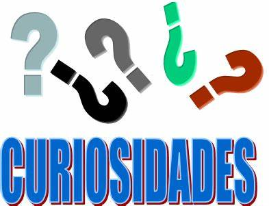

Fatos surpreendente curiosidades sobre o nosso mundo!
Separamos uma lista de fatos aleatorios sobre o mundo para você!

A palavra curiosidade tem origem no latim curiositas e significa “desejo de conhecer”. Sendo assim, é natural que esse desejo nos mova a sempre buscar novos fatos curiosos.
Essa busca por conhecimento faz parte da natureza humana. Foi assim, por exemplo, que os humanos exploraram o ambiente, o uso de ferramentas e novas técnicas de sobrevivência. Ainda que a tecnologia e o conhecimento científico tenha avançado, isso não significa que o desejo por descobrir curiosidades diminuiu.
Para satisfazer essa busca, separamos algumas curiosidades. São dezenas de fatos curiosos sobre o a vida, o universo e muito mais.